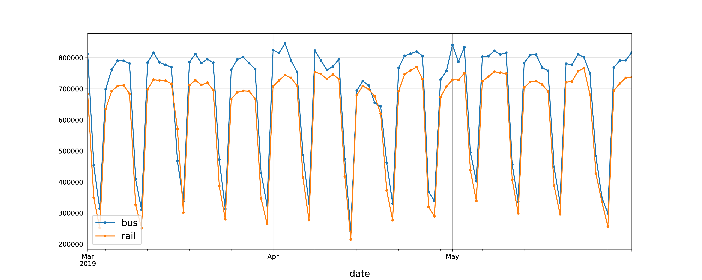
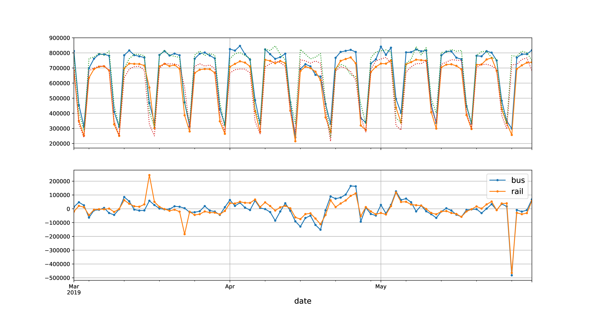
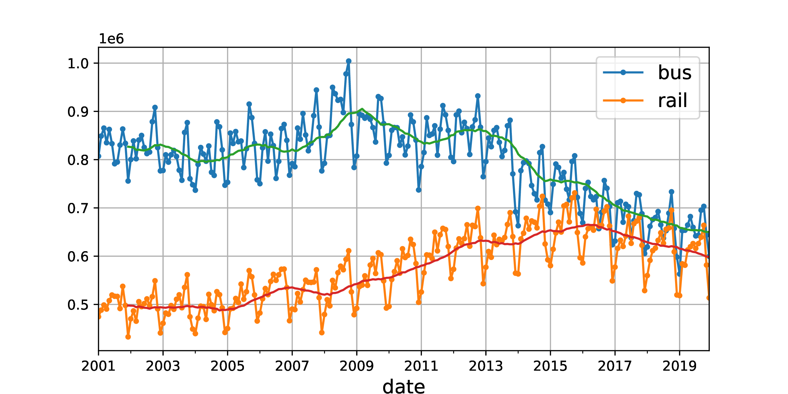
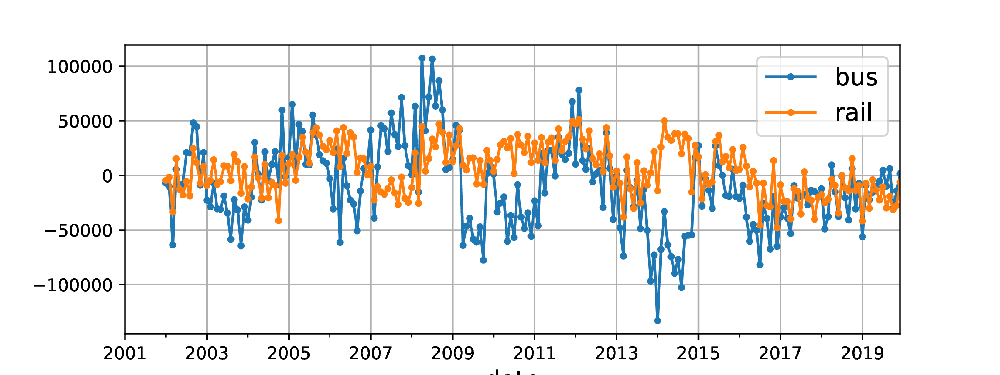
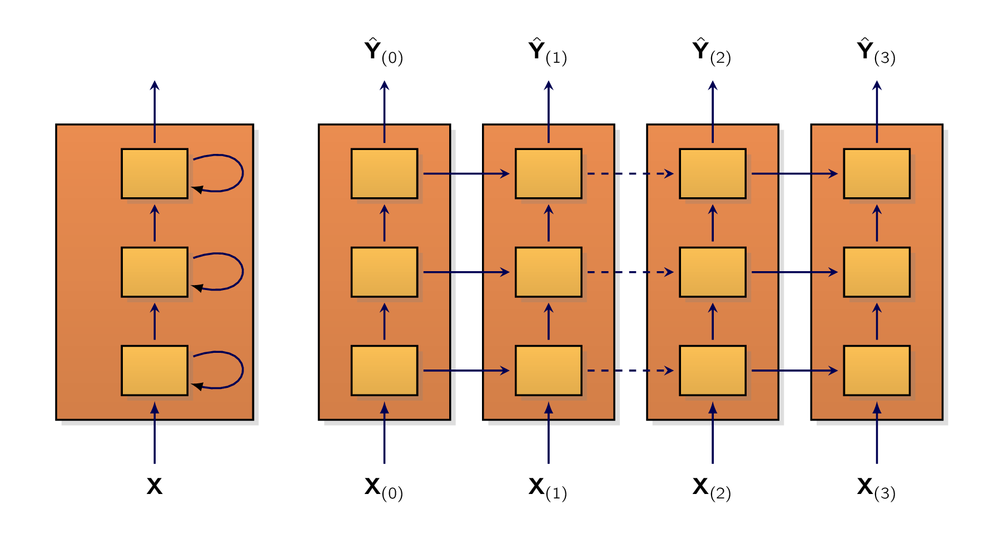

For this part, let’s pretend we’ve just been hired as a data scientist by Chicago’s Transit Authority. [195] ¶[195]CTA work with numerous transportation options within the city of Chicago, including the Chicago “L”. In picture; A Red Line train pulls into Adams/Wabash, being rerouted over elevated tracks due to construction in the State Street subway (2007). Our first task is to build a model capable of forecasting the number of passengers which will ride on bus and rail the next day.
For this we have access to daily ridership data since 2001. Let’s walk through how we would handle this. As with any MLMachine LearningMachine Learning project, we’ll first start by loading and cleaning up the data:
import pandas as pd
from pathlib import Path
path = Path("datasets/ridership/CTA_-_Ridership_-_Daily_Boarding_Totals.csv")
df = pd.read_csv(path, parse_dates=["service_date"])
df.columns = ["date", "day_type", "bus", "rail", "total"] # shorter names
df = df.sort_values("date").set_index("date")
df = df.drop("total", axis=1) # no need for total, it's just bus + rail
df = df.drop_duplicates() # remove duplicated months (2011-10 and 2014-07)
We load the .csv file, set short column names, sort the rows by date, remove the redundant total
column, and drop duplicate rows. Now let’s check what the first few rows look like:
print(df.head())
day_type bus rail
date
2001-01-01 U 297192 126455
2001-01-02 W 780827 501952
2001-01-03 W 824923 536432
2001-01-04 W 870021 550011
2001-01-05 W 890426 557917
On January 1st, 2001,
-
people boarded a bus in Chicago, and
-
boarded a train.
The day_type column contains W for Weekdays, A for Saturdays, and U for Sundays or holidays.
Now let’s plot the bus and rail ridership figures over a few months in 2019, to see what it looks
like:
import matplotlib.pyplot as plt
df["2019-03":"2019-05"].plot(grid=True, marker=".", figsize=(15, 6))
plt.savefig('images/Working-with-RNNs-and-CNNs/daily-ridership.pdf')
plt.show()

Pandas includes both the start and end month in the range, so this plots the data from the of March all the way up to the of May.
This is a time series:
More specifically, since there are multiple values per time step, this is called a multivariate time series. If we only looked at the bus column, it would be a univariate time series, with a single value per time step. Predicting future values (i.e., forecasting) is the most typical task when dealing with time series, and this is what we will focus on in this chapter. Other tasks include imputation (filling in missing past values), classification, anomaly detection, and more.
Looking at Figure 13-6, we can see that a similar pattern is clearly repeated every week. This is called a weekly seasonality. In fact, it’s so strong in this case that forecasting tomorrow’s ridership by just copying the values from a week earlier will yield reasonably good results. This is called naive forecasting: simply copying a past value to make our forecast. Naive forecasting is often a great baseline, and it can even be tricky to beat in some cases.
In general, naive forecasting means copying the latest known value. [196] e.g., forecasting that tomorrow will be the same as today. However, in our case, copying the value from the previous week works better, due to the strong weekly seasonality.
To visualize these naive forecasts, let’s overlay the two time series, for bus and rail, as well as the same time series lagged by one week [197] i.e., shifted toward the right. using dotted lines. We’ll also plot the difference between the two; [198] i.e., the value at time minus the value at time . this is called differencing (see Figure 13-7):
diff_7 = df[["bus", "rail"]].diff(7)["2019-03":"2019-05"]
fig, axs = plt.subplots(2, 1, sharex=True, figsize=(15, 8))
df.plot(ax=axs[0], legend=False, marker=".") # original time series
df.shift(7).plot(ax=axs[0], grid=True, legend=False, linestyle=":") # lagged
diff_7.plot(ax=axs[1], grid=True, marker=".") # 7-day difference time series
axs[0].set_ylim([170_000, 900_000]) # extra code beautifies the plot
plt.savefig('images/Working-with-RNNs-and-CNNs/ridership-comparison.pdf')
plt.show()

Not too bad! Notice how closely the lagged time series track the actual time series. When a time series
is correlated with a lagged version of itself, we say that the time series is autocorrelated. As we can
see, most of the differences are fairly small, except at the end of May. Maybe there was a holiday at
that time? Let’s check the day_type column:
print(list(df.loc["2019-05-25":"2019-05-27"]["day_type"]))
['A', 'U', 'U']
Indeed, there was a long weekend back then:
We could use this column to improve our forecasts, but for now let’s just measure the mean absolute error over the three-month period we’re arbitrarily focusing on - March, April, and May 2019 - to get a rough idea:
print(diff_7.abs().mean())
bus 43915.608696
rail 42143.271739
dtype: float64
Our naive forecasts get a MAEMean Absolute ErrorMean Absolute Error of about bus riders, and about rail riders. It’s hard to tell at a glance how good or bad this is, so let’s put the forecast errors into perspective by dividing them by the target values:
targets = df[["bus", "rail"]]["2019-03":"2019-05"]
print((diff_7 / targets).abs().mean())
bus 0.082938
rail 0.089948
dtype: float64
What we just computed is called the mean absolute percentage error (MAPE).
- ¶
- Description: 4.1: Mean Absolute Percentage Error (MAPE)
-
The mean absolute percentage error (MAPE), also known as mean absolute percentage deviation (MAPD), is a measure of prediction accuracy of a forecasting method in statistics and is usually expresses the accuracy as a ratio defined by the formula:
Where is the actual value and is the forecast value. Their difference is divided by the actual value . The absolute value of this ratio is summed for every forecasted point in time and divided by the number of fitted points .
MAPE should be used with extreme caution in forecasting, because small target labels can lead to highly inflated MAPE scores.
It looks like our naive forecasts give us a MAPE of roughly 8.3% for bus and 9.0% for rail. It’s interesting to note that the MAEMean Absolute ErrorMean Absolute Error for the rail forecasts looks slightly better than the MAE for the bus forecasts, while the opposite is true for the MAPE. That’s because the bus ridership is larger than the rail ridership, so naturally the forecast errors are also larger, but when we put the errors into perspective, it turns out that the bus forecasts are actually slightly better than the rail forecasts.
- ¶
- Information 4.45: Different Metrics
-
The MAEMean Absolute ErrorMean Absolute Error, MAPE, and MSEMean Square ErrorMean Square Error are among the most common metrics we can use to evaluate our forecasts. As always, choosing the right metric depends on the task.
For example, if our project suffers quadratically more from large errors than from small ones, then the MSE may be preferable, as it strongly penalizes large errors.
Looking at the time series, there doesn’t appear to be any significant monthly seasonality, but let’s check whether there’s any yearly seasonality. We’ll look at the data from 2001 to 2019. To reduce the risk of data snooping, we’ll ignore more recent data for now. Let’s also plot a 12-month rolling average for each series to visualize long-term trends (see Figure 13-8):
period = slice("2001", "2019")
df_monthly = df.select_dtypes(include="number").resample('ME').mean()
rolling_average_12_months = df_monthly.loc[period].rolling(window=12).mean()
fig, ax = plt.subplots(figsize=(8, 4))
df_monthly[period].plot(ax=ax, marker=".")
rolling_average_12_months.plot(ax=ax, grid=True, legend=False)
plt.savefig('images/Working-with-RNNs-and-CNNs/yearly-seasonality.pdf')
plt.show()

There’s definitely some yearly seasonality as well, although it is noisier than the weekly seasonality, and more visible for the rail series than the bus series:
Let’s check what we get if we plot the 12-month difference (see Figure 13-9):
df_monthly.diff(12)[period].plot(grid=True, marker=".", figsize=(8, 3))
plt.savefig('images/Working-with-RNNs-and-CNNs/yearly-difference.pdf')
plt.show()

Notice how differencing not only removed the yearly seasonality, but it also removed the long-term trends. For example, the linear downward trend present in the time series from 2016 to 2019 became a roughly constant negative value in the differenced time series. In fact, differencing is a common technique used to remove trend and seasonality from a time series: it’s easier to study a stationary time series, meaning one whose statistical properties remain the same over time, without any seasonality or trends. Once we’re able to make accurate forecasts on the differenced time series, it’s easy to turn them into forecasts for the actual time series by just adding back the past values that were previously subtracted.
We may be thinking that we’re only trying to predict tomorrow’s ridership, so the long-term patterns matter much less than the short-term ones. We’re right, but still, we may be able to improve performance slightly by taking long-term patterns into account. For example, daily bus ridership dropped by about 2,500 in October 2017, which represents about 570 fewer passengers each week, so if we were at the end of October 2017, it would make sense to forecast tomorrow’s ridership by copying the value from last week, minus 570. Accounting for the trend will make our forecasts a bit more accurate on average.
Now that we’re familiar with the ridership time series, as well as some of the most important concepts in time series analysis, including seasonality, trend, differencing, and moving averages, let’s take a quick look at a very popular family of statistical models that are commonly used to analyze time series.
We’ll start with the ARMAAutoregressive Moving AverageUsed to represent a (weakly) stationary stochastic process by combining two components: autoregression (AR) and moving average (MA). These models are widely used for analyzing the structure of a series and for forecasting future values. model, developed by Herman Wold in the 1930s:
Specifically, the moving average component is computed using a weighted sum of the last few forecast errors. Eq. (4.3) shows how the model makes its forecasts,
| (4.3) |
where
-
is the model’s forecast for time step .
-
is the time series’ value at time step .
-
The first sum is the weighted sum of the past values of the time series, using the learned weights . The number is a hyperparameter, and it determines how far back into the past the model should look.
This sum is the autoregressive component of the model where it performs regression based on past values.
-
The second sum is the weighted sum over the past q forecast errors (t), using the learned weights . The number is a hyperparameter. This sum is the moving average component of the model.
Importantly, this model assumes that the time series is stationary. If it is not, then differencing
may help. Using differencing over a single time step will produce an approximation of the
derivative of the time series: indeed, it will give the slope of the series at each time step. This
means that it will eliminate any linear trend, transforming it into a constant value. For
example, if we apply one-step differencing to the series [3, 5, 7, 9, 11] , we get the differenced series [2, 2, 2, 2]
.
If the original time series has a quadratic trend instead of a linear trend, then a single round of
differencing will not be enough. For example, the series [1, 4, 9, 16, 25, 36] becomes [3, 5, 7, 9, 11] after one round of differencing, but
if we run differencing for a second round, then we get [2, 2, 2, 2] . So, running two rounds of differencing will
eliminate quadratic trends. More generally, running d consecutive rounds of differencing computes an
approximation of the dth order derivative of the time series, so it will eliminate polynomial trends up to
degree d.
This hyperparameter d is called the order of integration.
Differencing is the central contribution of the autoregressive integrated moving average (ARIMA) model, introduced in 1970 by George Box and Gwilym Jenkins in their book Time Series Analysis (Wiley). This model runs d rounds of differencing to make the time series more stationary, then it applies a regular ARMA model. When making forecasts, it uses this ARMA model, then it adds back the terms that were subtracted by differencing.
One last member of the ARMA family is the seasonal ARIMA (SARIMA) model: it models the time series in the same way as ARIMA, but it additionally models a seasonal component for a given frequency (e.g., weekly), using the exact same ARIMA approach. It has a total of seven hyperparameters: the same p, d, and q hyperparameters as ARIMA; plus additional P, D, and Q hyperparameters to model the seasonal pattern; and lastly the period of the seasonal pattern, denoted s. The hyperparameters P, D, and Q are just like p, d, and q, but they are used to model the time series at t s, t 2s, t 3s, etc.
Let’s see how to fit a SARIMA model to the rail time series, and use it to make a forecast for tomorrow’s ridership. We’ll pretend today is the last day of May 2019, and we want to forecast the rail ridership for tomorrow, the 1st of June, 2019. For this, we can use the statsmodels library, which contains many different statistical models, including the ARMA model and its variants, implemented by the ARIMA class:
from statsmodels.tsa.arima.model import ARIMA
origin, today = "2019-01-01", "2019-05-31"
rail_series = df.loc[origin:today]["rail"].asfreq("D")
model = ARIMA(rail_series,
order=(1, 0, 0),
seasonal_order=(0, 1, 1, 7))
model = model.fit()
y_pred = model.forecast() # returns 427,758.6
In this code example:
-
We start by importing the
ARIMAasfreq("D") -
Next, we create an
ARIMAorder=(1, 0, 0)seasonal_order=(0, 1, 1, 7)fit() -
Next, we fit the model, and we use it to make a forecast for tomorrow, the 1st of June, 2019.
The forecast is passengers, when in fact there were 379,044. Yikes, we’re 12.9% offthat’s pretty bad. It’s actually slightly worse than naive forecasting, which forecasts 426,932, off by 12.6%. But perhaps we were just unlucky that day? To check this, we can run the same code in a loop to make forecasts for every day in March, April, and May, and compute the MAE over that period:
origin, start_date, end_date = "2019-01-01", "2019-03-01", "2019-05-31"
time_period = pd.date_range(start_date, end_date)
rail_series = df.loc[origin:end_date]["rail"].asfreq("D")
y_preds = []
for today in time_period.shift(-1):
model = ARIMA(rail_series[origin:today], # train on data up to "today"
order=(1, 0, 0),
seasonal_order=(0, 1, 1, 7))
model = model.fit() # note that we retrain the model every day!
y_pred = model.forecast().iloc[0]
y_preds.append(y_pred)
y_preds = pd.Series(y_preds, index=time_period)
mae = (y_preds - rail_series[time_period]).abs().mean() # returns 32,040.7
Ah, that’s much better! The MAEMean Absolute ErrorMean Absolute Error is about 32,041, which is significantly lower than the MAE we got with naive forecasting (42,143). So although the model is not perfect, it still beats naive forecasting by a large margin, on average. At this point, we may be wondering how to pick good hyperparameters for the SARIMA model. There are several methods, but the simplest to understand and to get started with is the brute-force approach: just run a grid search. For each model we want to evaluate (i.e., each hyperparameter combination), we can run the preceding code example, changing only the hyperparameter values. Good p, q, P, and Q values are usually fairly small (typically 0 to 2, sometimes up to 5 or 6), and d and D are typically 0 or 1, sometimes 2. As for s, it’s just the main seasonal pattern’s period: in our case it’s 7 since there’s a strong weekly seasonality. The model with the lowest MAE wins. Of course, we can replace the MAE with another metric if it better matches our business objective. And that’s it!
- ¶
- Information 4.46: Finding the Hyperparameters
-
There are other more principled approaches to selecting good hyperparameters, based on analyzing the autocorrelation function (ACF) and partial autocorrelation function (PACF), [199] For more details on the ACF-PACF approach, check out this very nice post by Jason Brownlee. or minimizing the AIC or BIC metrics (introduced in Chapter 8) to penalize models that use too many parameters and reduce the risk of overfitting the data, but grid search is a good place to start.
Now that we have two baselines, naive forecasting and SARIMA, let’s try to use the MLMachine LearningMachine Learning models we’ve covered so far to forecast this time series, starting with a basic linear model. Our goal will be to forecast tomorrow’s ridership based on the ridership of the past 8 weeks of data (56 days). The inputs to our model will therefore be sequences, [200] usually a single sequence per day once the model is in production. each containing 56 values from time steps t 55 to t. For each input sequence, the model will output a single value: the forecast for time step t + 1.
But what will we use as training data? Well, here’s the trick: we will use every 56-day window from the past as training data, and the target for each window will be the value immediately following it. To do that, we need to create a custom dataset that will chop a given time series into all possible windows of a given length, each with its corresponding target:
class TimeSeriesDataset(torch.utils.data.Dataset):
def __init__(self, series, window_length):
self.series = series
self.window_length = window_length
def __len__(self):
return len(self.series) - self.window_length
def __getitem__(self, idx):
if idx >= len(self):
raise IndexError("dataset index out of range")
end = idx + self.window_length # 1st index after window
window = self.series[idx : end]
target = self.series[end]
return window, target
Let’s test this class by applying it to a simple time series containing the numbers 0 to 5. We could
represent this series in 1D using [0, 1, 2, 3, 4, 5], but the RNNRecurrent Neural Networksa type of
ANN designed to process sequential data, such as text, speech, or time series, by passing information
through loops from one step to the next modules expect each sequence to be 2D, with a shape of
[sequence length, dimensionality]. For univariate time series, the dimensionality is simply 1, so
we represent the time series as [[0], [1], [2], [3], [4], [5]]. In the following code below, the
TimeSeriesDataset
my_series = torch.tensor([[0], [1], [2], [3], [4], [5]])
my_dataset = TimeSeriesDataset(my_series, window_length=3)
for window, target in my_dataset:
print("Window:", window, " Target:", target)
Window: tensor([[0],
[1],
[2]]) Target: tensor([3])
Window: tensor([[1],
[2],
[3]]) Target: tensor([4])
Window: tensor([[2],
[3],
[4]]) Target: tensor([5])
It looks like our TimeSeriesDataset
from torch.utils.data import DataLoader
torch.manual_seed(0)
my_loader = DataLoader(my_dataset, batch_size=2, shuffle=True)
for X, y in my_loader:
print("X:", X, " y:", y)
The first batch contains the windows [[0], [1], [2]] and [[2], [3], [4]] , along with their respective targets [3] and [5] ; and the second
batch contains only one window [[1], [2], [3]] , with its target [4] . Indeed, when the length of a dataset is not a
multiple of the batch size, the last batch is shorter.
OK, now that we have a way to convert a time series into a dataset that we can use to train
MLMachine LearningMachine Learning models, let’s go ahead and prepare our ridership
dataset. First, we need to split our data into a training period, a validation period, and a test
period. We will focus on the rail ridership for now. We will convert the data to 32-bit float
tensors, and scale them down by a factor of one million to ensure the values end up near the
01 range; this plays nicely with the default weight initialization and learning rate. In this
code, we use df[["rail"]] instead of df["rail"] to ensure the resulting tensor has a shape of [series length, 1] rather than [series
length]:
rail_train = torch.FloatTensor(df[["rail"]]["2016-01":"2018-12"].values / 1e6)
rail_valid = torch.FloatTensor(df[["rail"]]["2019-01":"2019-05"].values / 1e6)
rail_test = torch.FloatTensor(df[["rail"]]["2019-06":].values / 1e6)
X: tensor([[[0],
[1],
[2]],
[[2],
[3],
[4]]]) y: tensor([[3],
[5]])
X: tensor([[[1],
[2],
[3]]]) y: tensor([[4]])
- ¶
- Information 4.47: Working with Time
-
When dealing with time series, we generally want to split across time. However, in some cases we may be able to split along other dimensions, which will give you a longer time period to train on.
For example, if we have data about the financial health of 10,000 companies from 2001 to 2019, we might be able to split this data across the different companies. It’s very likely that many of these companies will be strongly correlated, though, [201] e.g., whole economic sectors may go up or down jointly. and if we have correlated companies across the training set and the test set, our test set will not be as useful, as its measure of the generalization error will be optimistically biased.
Next, let’s use our TimeSeriesDataset
window_length = 56
train_set = TimeSeriesDataset(rail_train, window_length)
train_loader = DataLoader(train_set, batch_size=32, shuffle=True)
valid_set = TimeSeriesDataset(rail_valid, window_length)
valid_loader = DataLoader(valid_set, batch_size=32)
test_set = TimeSeriesDataset(rail_test, window_length)
test_loader = DataLoader(test_set, batch_size=32)
And now we’re ready to build and train any regression model we want!
Let’s try a basic linear model first. We will use the Huber loss, which usually works better than minimizing the MAEMean Absolute ErrorMean Absolute Error directly, as discussed in Introduction to Artificial Neural Networks:
import torch.nn as nn
import torchmetrics
torch.manual_seed(42)
model = nn.Sequential(nn.Flatten(), nn.Linear(window_length, 1)).to(device)
loss_fn = nn.HuberLoss()
optimizer = torch.optim.SGD(model.parameters(), lr=0.003, momentum=0.9)
metric = torchmetrics.MeanAbsoluteError().to(device)
history = train(model, optimizer, loss_fn, metric, train_loader,
valid_loader, n_epochs=50)
Note that we must use an nn.Flattennn.Linear[batch size, window length, dimensionality] ,
but the nn.Linear[batch size, features] . If we train this model, we will see that it reaches a validation
MAE of
(our mileage may vary). That’s better than naive forecasting, but worse than the SARIMA
model.
Let’s implement a simple RNNRecurrent Neural Networksa type of ANN designed to process sequential
data, such as text, speech, or time series, by passing information through loops from one step to the
next containing a single recurrent layer (see Figure 13-2) plus a final nn.Linear
class SimpleRnnModel(nn.Module):
def __init__(self, input_size, hidden_size, output_size):
super().__init__()
self.hidden_size = hidden_size
self.memory_cell = nn.Sequential(
nn.Linear(input_size + hidden_size, hidden_size),
nn.Tanh()
)
self.output = nn.Linear(hidden_size, output_size)
def forward(self, X):
batch_size, window_length, dimensionality = X.shape
X_time_first = X.transpose(0, 1)
H = torch.zeros(batch_size, self.hidden_size, device=X.device)
for X_t in X_time_first:
XH = torch.cat((X_t, H), dim=1)
H = self.memory_cell(XH)
return self.output(H)
torch.manual_seed(42)
model = SimpleRnnModel(input_size=1, hidden_size=32, output_size=1).to(device)
Let’s go through this code:
-
The constructor takes three arguments: the input size, the hidden size, and the output size. In our case, the input size is set to 1 when we create the model (on the very last line) since we are dealing with a univariate time series. The hidden size is the number of recurrent neurons. We set it to 32 in this example, but this is a hyperparameter we can tune. The output size is 1 since we’re only forecasting a single value.
-
The constructor first creates the memory cell, which will be used once per time step: it’s a sequential module composed of an
nn.Linearlayer and the tanh activation function. We can use another activation function here, but it’s common to use the tanh activation function because it tends to be more stable than other activation functions in RNNRecurrent Neural Networksa type of ANN designed to process sequential data, such as text, speech, or time series, by passing information through loops from one step to the nexts. -
Next, we create an
nn.Linear -
The
forward() -
The hidden state H is initialized to zeros: for each input window, there’s one zero per recurrent neuron, so the hidden state’s shape is
[batch size, hidden_size] -
Next, we iterate over each time step. For this, we must swap the first two dimensions of X using
permute(0, 1)X_t[batch size, dimensionality] -
At each time step, we want to feed both the current inputs
X_tHX_tH[batch size, input_size + hidden size] -
After the loop,
Hnn.Linear[batch size, output size]
In short, this model initializes the hidden state to zeros, then it goes through each time step and applies the memory cell to both the current inputs and the last hidden state, which gives it the new hidden state. It repeats this process until the last time step, then it passes the last hidden state through a linear layer to get the actual forecasts. All of this is performed simultaneously for every sequence in the batch.
So that’s our first recurrent model! It’s a sequence-to-vector model. Since there’s a single output neuron in this case, the output vector for each input sequence has a size of 1.
Now if we move this model to the GPU, then train and evaluate it just like the previous one, we will find that its validation MAE reaches 30,659. That’s the best model we’ve trained so far, and it even beats the SARIMA model; we’re doing pretty well!
- ¶
- Information 4.48: Selective Normalization
-
We’ve only normalized the time series, without removing trend and seasonality, and yet the model still performs well. This is convenient, as it makes it possible to quickly search for promising models without worrying too much about preprocessing. However, to get the best performance, we may want to try making the time series more stationary, for example, using differencing.
PyTorch comes with an nn.RNNSimpleRnnModel
class SimpleRnnModel(nn.Module):
def __init__(self, input_size, hidden_size, output_size):
super().__init__()
self.hidden_size = hidden_size
self.memory_cell = nn.Sequential(
nn.Linear(input_size + hidden_size, hidden_size),
nn.Tanh()
)
self.output = nn.Linear(hidden_size, output_size)
def forward(self, X):
batch_size, window_length, dimensionality = X.shape
X_time_first = X.transpose(0, 1)
H = torch.zeros(batch_size, self.hidden_size, device=X.device)
for X_t in X_time_first:
XH = torch.cat((X_t, H), dim=1)
H = self.memory_cell(XH)
return self.output(H)
torch.manual_seed(42)
model = SimpleRnnModel(input_size=1, hidden_size=32, output_size=1).to(device)
The code is much shorter than before. Let’s go through it:
-
In the constructor, we now create an
nn.RNNbatch_first=Truebatch_first=Truenn.RNN -
The constructor also creates an output layer, exactly like in our previous implementation.
-
In the
forward()nn.RNN -
Note that the
nn.RNN-
outputs is a tensor containing the outputs of the top recurrent layer at every time step. Right now we have a single recurrent layer, but in the next section we will see that the nn.RNN module supports multiple recurrent layers. Since we are dealing with a simple RNNRecurrent Neural Networksa type of ANN designed to process sequential data, such as text, speech, or time series, by passing information through loops from one step to the next, the outputs are just the hidden states of the top recurrent layer at each time step. The outputs tensor has a shape of [batch size, window length, hidden size] (if we didn’t set
batch_first=True -
last_state
-
-
In the end, we take the last output [203] which is also the last state of the top recurrent layer. and we pass it through our nn.Linear output layer.
If we train this model, we will get a similar result as before, but generally much faster because the
nn.RNNnn.RNN
- ¶
- Information 4.49: RNN Bias Parameters
-
The
nn.RNN
It is quite common to stack multiple layers of cells, as shown in Figure 13-10. This gives you a deep RNNRecurrent Neural Networksa type of ANN designed to process sequential data, such as text, speech, or time series, by passing information through loops from one step to the next.

Implementing a deep RNNRecurrent Neural Networksa type of ANN designed to process sequential
data, such as text, speech, or time series, by passing information through loops from one step to the
next with PyTorch is straightforward: just set the num_layersnn.RNNnum_layers=3nn.RNN
torch.manual_seed(42)
deep_model = DeepRnnModel(
input_size=1, hidden_size=32, output_size=1, num_layers=3).to(device)
fit_and_evaluate(deep_model, train_loader, valid_loader, lr=0.07, n_epochs=50)
If we train and evaluate this model, we will find that it reaches an MAE of 29,273. That’s our best model so far!
An important quality of NNNeural NetworksNeural Networks is their flexibility:
For example, let’s try to forecast the rail time series using both the rail and bus data as input. In fact, let’s also throw in the day type! Since we can always know in advance whether tomorrow is going to be a weekday, a weekend, or a holiday, we can shift the day type series one day into the future, so that the model is given tomorrow’s day type as input. For simplicity, we’ll do this processing using Pandas:
df_mulvar = df[["rail", "bus"]] / 1e6 # use both rail & bus series as input
df_mulvar["next_day_type"] = df["day_type"].shift(-1) # we know tomorrow's type
df_mulvar = pd.get_dummies(df_mulvar, dtype=float) # one-hot encode day type
Now df_mulvar
Next, we can proceed much like we did earlier. First we split the data into three periods, scale it down by a factor of one million, and convert it to tensors:
mulvar_train = torch.FloatTensor(df_mulvar["2016-01":"2018-12"].values)
mulvar_valid = torch.FloatTensor(df_mulvar["2019-01":"2019-05"].values)
mulvar_test = torch.FloatTensor(df_mulvar["2019-06":].values)
Then we need to create the PyTorch datasets. If we used the TimeSeriesDataset for this, the targets
would include the next day’s rail and bus ridership, as well as the one-hot encoding of the following day
type. Since we only want to predict the rail ridership for now, we must tweak the TimeSeriesDataset to
keep only the first value in the target, which is the rail ridership. One way to do this is to create a new
MulvarTimeSeriesDataset class that extends the TimeSeriesDataset class and tweaks the
__getitem__()
class MulvarTimeSeriesDataset(TimeSeriesDataset):
def __getitem__(self, idx):
window, target = super().__getitem__(idx)
return window, target[:1]
Next, we can create the datasets and the data loaders, much like we did earlier:
window_length = 56
mulvar_train_set = MulvarTimeSeriesDataset(mulvar_train, window_length)
mulvar_train_loader = DataLoader(mulvar_train_set, batch_size=32, shuffle=True)
mulvar_valid_set = MulvarTimeSeriesDataset(mulvar_valid, window_length)
mulvar_valid_loader = DataLoader(mulvar_valid_set, batch_size=32)
mulvar_test_set = MulvarTimeSeriesDataset(mulvar_test, window_length)
mulvar_test_loader = DataLoader(mulvar_test_set, batch_size=32)
If we look at the batches produced by the data loaders, we will find that the input shape is [32, 56, 5] , and the
target shape is [32, 1] . Perfect!
So we can finally create the RNNRecurrent Neural Networksa type of ANN designed to process sequential data, such as text, speech, or time series, by passing information through loops from one step to the next:
torch.manual_seed(42)
mulvar_model = SimpleRnnModel(input_size=5, hidden_size=32, output_size=1)
mulvar_model = mulvar_model.to(device)
Notice that this model is identical to the univar_modelinput_size=5RNN forecast both the rail and bus ridership. We just need to return target[:2]
instead of target[:1] in the MulvarTimeSeries Dataset class, and set output_size=2
As we discussed in Introduction to Artificial Neural Networks, using a single model for multiple related tasks often results in better performance than using a separate model for each task, since features learned for one task may be useful for the other tasks, and also because having to perform well across multiple tasks prevents the model from overfitting (it’s a form of regularization). However, it depends on the task, and in this particular case the multitask RNNRecurrent Neural Networksa type of ANN designed to process sequential data, such as text, speech, or time series, by passing information through loops from one step to the next that forecasts both the bus and the rail ridership doesn’t perform quite as well as dedicated models that forecast one or the other (using all five columns as input). Still, it reaches a validation MAE of 26,441 for rail and 26,178 for bus, which is still pretty good.
So far we have only predicted the value at the next time step, but we could just as easily have predicted the value several steps ahead by changing the targets appropriately. [205] e.g., to predict the ridership 2 weeks from now, we could just change the targets to be the value 14 days ahead instead of 1 day ahead. But what if we want to predict the next 14 values with a single model?
The first option is to take the univar_model
univar_model.eval()
n_steps = 14
with torch.no_grad():
X = rail_valid[:window_length].unsqueeze(dim=0).to(device)
for step_ahead in range(n_steps):
y_pred_one = univar_model(X)
X = torch.cat([X, y_pred_one.unsqueeze(dim=1)], dim=1)
Y_pred = X[0, -n_steps:, 0]
In this code, we take the rail ridership of the first 56 days of the validation period, we add a batch
dimension of size 1 using the unsqueeze()univar_modelunsqueeze()[1, 56 + 14, 1] , and
our final forecasts are the last 14 values of X. The resulting forecasts are plotted in Figure
13-11.
- ¶
- Information 4.50: The Propagation of Errors
-
If the model makes an error at one time step, then the forecasts for the following time steps are impacted as well: the errors tend to accumulate. So, it’s preferable to use this technique only for a small number of steps.
The second option is to train an RNNRecurrent Neural Networksa type of ANN designed to process sequential data, such as text, speech, or time series, by passing information through loops from one step to the next to predict the next 14 values in one shot. We can still use a sequence-to-vector model, but it will output 14 values instead of 1. However, we first need to change the targets to be vectors containing the next 14 values. For this, we can create the following class:
class ForecastAheadDataset(TimeSeriesDataset):
def __len__(self):
return len(self.series) - self.window_length - 14 + 1
def __getitem__(self, idx):
end = idx + self.window_length # 1st index after window
window = self.series[idx : end]
target = self.series[end : end + 14, 0] # 0 = rail ridership
return window, target
I’ve hardcoded the number 14, but in a real project we should make this configurable. [206]
e.g., just like the
window_length
This class inherits from the TimeSeriesDataset class and tweaks its __len__()__getitem__()
window_length = 56
ahead_train_set = ForecastAheadDataset(mulvar_train, window_length)
ahead_train_loader = DataLoader(ahead_train_set, batch_size=32, shuffle=True)
ahead_valid_set = ForecastAheadDataset(mulvar_valid, window_length)
ahead_valid_loader = DataLoader(ahead_valid_set, batch_size=32)
ahead_test_set = ForecastAheadDataset(mulvar_test, window_length)
ahead_test_loader = DataLoader(ahead_test_set, batch_size=32)
Lastly, we can create a simple RNNRecurrent Neural Networksa type of ANN designed to
process sequential data, such as text, speech, or time series, by passing information through
loops from one step to the next, just like the mulvar_modelput_size=14
torch.manual_seed(42)
ahead_model = SimpleRnnModel(input_size=5, hidden_size=32, output_size=14)
ahead_model = ahead_model.to(device)
fit_and_evaluate(ahead_model, ahead_train_loader, ahead_valid_loader, lr=0.05, n_epochs=50)
After training this model, we can predict the next 14 values at once, like this:
ahead_model.eval()
with torch.no_grad():
window = mulvar_valid[:window_length] # shape [56, 5]
X = window.unsqueeze(dim=0) # shape [1, 56, 5]
Y_pred = ahead_model(X.to(device)) # shape [1, 14]
This approach works quite well. Its forecasts for the next day are obviously better than its forecasts for 14 days into the future, but it doesn’t accumulate errors like the previous approach did. Now let’s see whether a sequence-to-sequence model can do even better.
We can combine both approaches to forecast many steps ahead: use a model that forecasts the next
14 days in one shot, then append the forecasts to the inputs and run the model again to
get forecasts for the following 14 days, and so on. We cannot use the ahead_model
Instead of training the model to forecast the next 14 values only at the very last time step, we can
train it to forecast the next 14 values at each and every time step. To be clear, at time
step 0 the model will output a vector containing the forecasts for time steps 1 to 14, then
at time step 1 the model will forecast time steps 2 to 15, and so on. In other words, the
targets are sequences of consecutive windows, shifted by one time step at each time step. The
target for each input window is not a vector anymore, but a sequence of the same length
as the inputs, containing a 14-dimensional vector at each step. Given an input batch of
shape [batch size, window length, input size][batch size, window length, output_size]
It may be surprising that the targets contain values that appear in the inputs (except for the last time step). Isn’t that cheating? Fortunately, not at all: at each time step, an RNNRecurrent Neural Networksa type of ANN designed to process sequential data, such as text, speech, or time series, by passing information through loops from one step to the next only knows about past time steps; it cannot look ahead. It is said to be a causal model.
We may be wondering why we would want to train a seq2seq model when we’re really only interested in forecasting future values, which are output by our model at the very last time step. And we’re right: after training, we can actually ignore all outputs except for the very last time step. The main advantage of this technique is that the loss will contain a term for the output of the RNNRecurrent Neural Networksa type of ANN designed to process sequential data, such as text, speech, or time series, by passing information through loops from one step to the next at each and every time step, not just for the output at the last time step. This means there will be many more error gradients flowing through the model, and they won’t have to flow through time as much since they will come from the output of each time step, not just the last one. This can both stabilize training and speed up convergence. Moreover, since the model must make predictions at each time step, it will see input sequences of varying lengths, which can reduce the risk of overfitting the model to the specific window length used during training. Well, at least that’s the hope! Let’s give this technique a try on the rail ridership time series. As usual, we first need to prepare the dataset:
class Seq2SeqDataset(ForecastAheadDataset):
def __getitem__(self, idx):
end = idx + self.window_length # 1st index after window
window = self.series[idx : end]
target_period = self.series[idx + 1 : end + 14, 0]
target = target_period.unfold(dimension=0, size=14, step=1)
return window, target
Our new Seq2SeqDataset class inherits from the ForecastAheadDataset class and overrides the
__getitem__()
Once again we must create a training set, a validation set, and a test set, as well as the corresponding data loaders:
window_length = 56
seq_train_set = Seq2SeqDataset(mulvar_train, window_length)
seq_train_loader = DataLoader(seq_train_set, batch_size=32, shuffle=True)
seq_valid_set = Seq2SeqDataset(mulvar_valid, window_length)
seq_valid_loader = DataLoader(seq_valid_set, batch_size=32)
seq_test_set = Seq2SeqDataset(mulvar_test, window_length)
seq_test_loader = DataLoader(seq_test_set, batch_size=32)
And lastly, we can build the sequence-to-sequence model:
class Seq2SeqRnnModel(SimpleRnnModel):
def forward(self, X):
outputs, last_state = self.rnn(X)
return self.output(outputs)
We inherit from the SimpleRnnModel class, and we override the forward() method. Instead of applying the linear self.output layer only to the outputs of the last time step, as we did before, we now apply it to the outputs of every time step. It may surprise we that this works at all. So far, we have only applied nn.Linear layers to 2D inputs of shape [batch size, features], but here the outputs tensor has a shape of [batch size, window length, hidden size]: it’s 3D, not 2D! Luckily, this works fine as the nn.Linear layer will automatically be applied to each time step, so the model’s predictions will have a shape of [batch size, window length, output size]: just what we need.
Under the hood, the nn.Linear layer relies on torch.matmul() for matrix multiplication. This function efficiently supports multiplying arrays of more than two dimensions. For example, we can multiply an array of shape [2, 3, 5, 7] with an array of shape [2, 3, 7, 11]. Indeed, these two arrays can both be seen as 2 Œ 3 grids of matrices, and torch.matmul() simply multiplies the corresponding matrices in both grids. Since multiplying a 5 Œ 7 matrix with a 7 Œ 11 matrix produces a 5 Œ 11 matrix, the final result is a 2 Œ 3 grid of 5 Œ 11 matrices, represented as a tensor of shape [2, 3, 5, 11]. Broadcasting is also supported; for example, we can multiply an array of shape [10, 56, 32] with an array of shape [32, 14]: each of the ten 56 Œ 32 matrices in the first array will be multiplied by the same 32 Œ 14 matrix in the second array, and we will get a tensor of shape [10, 56, 14]. That’s what happens when we pass a 3D input to an nn.Linear layer.
- ¶
- Information 4.51: Using Linear
-
Another way to get the exact same result is to replace the
nn.Linearnn.Conv1dConv1d(32, 14, kernel_size=1)
The training code is the same as usual. During training, all the model’s outputs are used, but after training, only the outputs of the very last time step matter, and the rest can be ignored (as mentioned earlier). For example, we can forecast the rail ridership for the next 14 days like this:
If we evaluate this model’s forecasts for t + 1, we will find a validation MAE of 23,350, which is very good. Of course, the model is not as accurate for more distant forecasts. For example, the MAE for t + 14 is 35,315.
Simple RNNRecurrent Neural Networksa type of ANN designed to process sequential data, such as text, speech, or time series, by passing information through loops from one step to the nexts can be quite good at forecasting time series or handling other kinds of sequences, but they do not perform as well on long time series or sequences. Let’s discuss why and see what we can do about it.
-
¶
- NNNeural Networks
Neural Networks
-
¶
- ANNArtificial Neural Networks
Artificial Neural Networks
-
¶
- GPUGraphical Processing Unit
A specialized electronic chip designed to rapidly render images, video, and 3D animations. Unlike a central processing unit (CPU) that processes tasks sequentially, a GPU uses parallel processing with thousands of smaller cores to handle many calculations at the same time.
-
¶
- RNNRecurrent Neural Networks
a type of ANN designed to process sequential data, such as text, speech, or time series, by passing information through loops from one step to the next
-
¶
- ARMAAutoregressive Moving Average
Used to represent a (weakly) stationary stochastic process by combining two components: autoregression (AR) and moving average (MA). These models are widely used for analyzing the structure of a series and for forecasting future values.
-
¶
- MSEMean Square Error
Mean Square Error
-
¶
- MAEMean Absolute Error
Mean Absolute Error
-
¶
- MLMachine Learning
Machine Learning
- [196].
- e.g., forecasting that tomorrow will be the same as today.
- [197].
- i.e., shifted toward the right.
- [198].
- i.e., the value at time minus the value at time .
- [199].
- For more details on the ACF-PACF approach, check out this very nice post by Jason Brownlee.
- [200].
- usually a single sequence per day once the model is in production.
- [201].
- e.g., whole economic sectors may go up or down jointly.
- [202].
- i.e., it would expect the input batches to have a shape of [window length, batch size, dimensionality] instead of [batch size, window length, dimensionality]
- [203].
- which is also the last state of the top recurrent layer.
- [204].
- recall that there are three possible day types, W, A, and U.
- [205].
- e.g., to predict the ridership 2 weeks from now, we could just change the targets to be the value 14 days ahead instead of 1 day ahead.
- [206].
- e.g., just like the
window_length